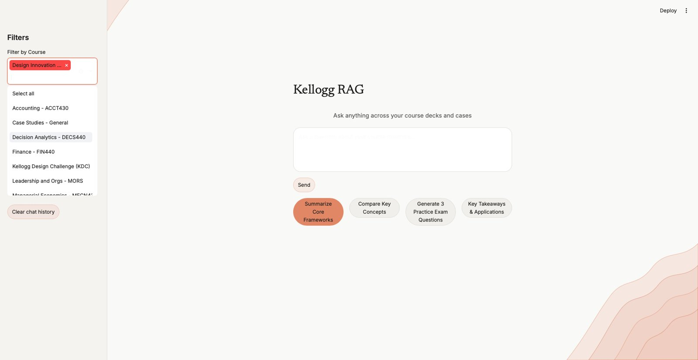

01Problem
Two years of business school leaves you with hundreds of cases, decks, spreadsheets and notes spread across folders. When I need a framework later, like WACC or a DuPont breakdown, I don't want to dig. I wanted my own assistant that answers from my course material only, and shows me where each answer came from.
02How I thought about it
I treated it like a product. I built a proof of concept in two days, used it for my own research, then tested it with four other students. The feedback pointed at three things: reliability, precision and trust. Each design decision came from one of those.
- Trust: every answer cites the course, file and page or slide, with clickable sources.
- Precision: retrieval over-fetches, then a reranker re-scores the candidates. A small glossary expands Kellogg shorthand (CAPM, 5C, DuPont) before searching.
- Reliability: free-tier quotas are budgeted and checkpointed, with a fallback key, so a big indexing run survives rate limits.
- Refuse rather than guess: I borrowed poka-yoke from manufacturing. A vague query with weak matches gets a clarifying question instead of a made-up answer.
03What I built
- Incremental ingestion of PDF, Word, PowerPoint, Excel, R Markdown and HTML files, tracked by file hash so only changed files re-index.
- Gemini embeddings in a Pinecone serverless index, with filters to search one course or several.
- FlashRank cross-encoder reranking and a chat engine with 3,000 tokens of conversation memory, streamed token by token.
- A Streamlit app of about 1,170 lines with a course filter, a results slider, clickable citations and a custom theme.

04What I learned
The first version of the guard rejected perfectly good questions. The reranker's scores peak around 0.01 to 0.10, not 0 to 1, so my threshold was wrong. I recalibrated it and unit-tested the gate.
Going end to end, from chunking strategy to API quota trade-offs to the interface, taught me more about production AI than any course.
05What's next
- An agentic router that picks the right course folder on its own.
- Hybrid keyword and vector search so formulas and course numbers never get missed.
- Automated evals that score how closely answers stick to the slides.